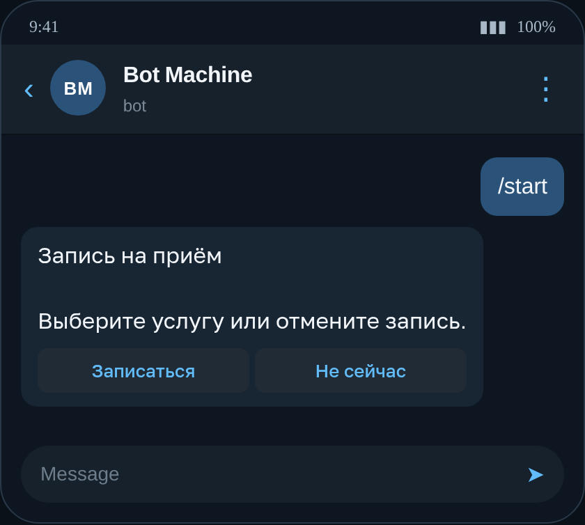
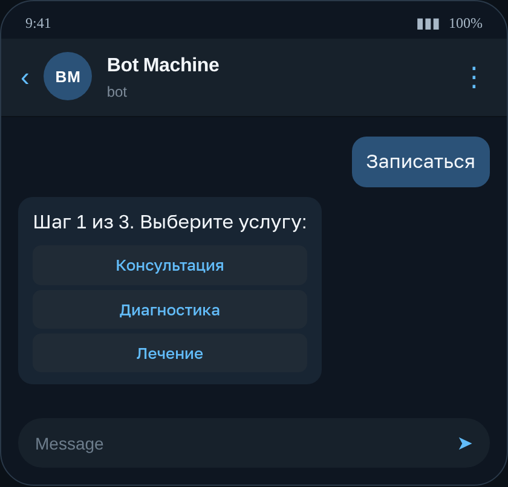
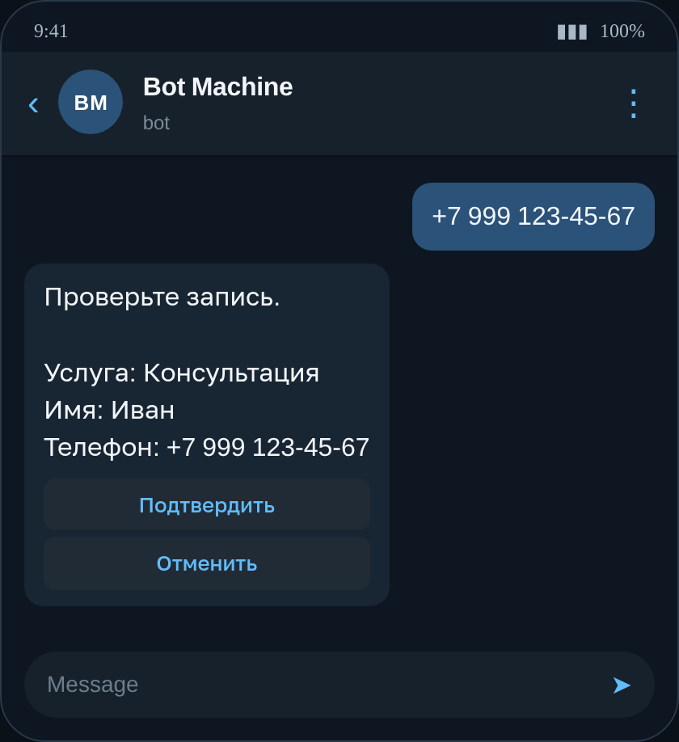
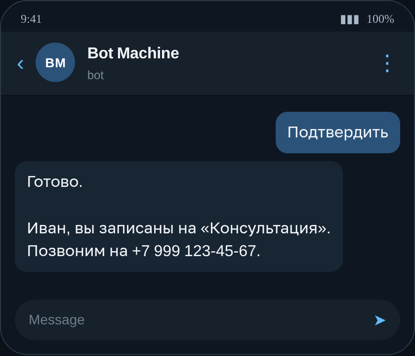

Диалог
bun run demo / bot-machinebun test · 108 тестов
system
$ bun run demo
bot
Запись на приём Выберите услугу или отмените запись.
user
Записаться
bot
Шаг 1 из 3. Выберите услугу: Консультация · Диагностика · Лечение
user
Консультация
bot
Шаг 2 из 3. Как вас зовут? Напишите имя одним сообщением.
user
Иван
system
→ телефон → подтверждение → готово
bot
Иван, вы записаны на «Консультация». Позвоним на +7 999 123-45-67.
Экраны




Что умеет
- Flow — состояния и переходы в одном объекте.
- View — React-подобная функция, отделённая от логики.
- Command — бизнес-действие с Zod-схемой на входе.
- Router с командами, callback-кнопками, текстом и middleware.
- Сессии: in-memory по умолчанию, Redis-хранилище в комплекте.
- Keyboard, HTML-форматирование и UI-kit без ручной сборки payload.
- 108 тестов: переходы, роутер, сессии, клавиатуры, интеграция.
- Рабочее демо записи на приём без Telegram-токена.
- Снимок стабильной версии 0.1.11 из kaizin-lab/bot-machine.
Как устроено
src/flow.tsконечный автомат, onAction/onText
src/router.tsExpress-подобная маршрутизация
src/core.tscreateQuery / createCommand
src/context.tsreply, edit, callback, enterFlow
src/session.tsin-memory и Redis-сессии
src/ui-kitготовые компоненты
file tree10 строк
src/
├── flow.ts
├── router.ts
├── core.ts
├── context.ts
├── session.ts
├── keyboard.ts
├── text.ts
├── logger/
└── ui-kit/Что реально, а что mock
Ниже — фактическое состояние проекта. Всё, что помечено как mock или отсутствует, не выдаётся за готовую функцию.
| Пункт | Состояние |
|---|---|
| Формат | ограничение код на TypeScript, не визуальный редактор |
| Вход | ограничение нужны TypeScript и Zod |
| Каналы | ограничение контекст завязан на Telegram |
| Сессии | ограничение in-memory по умолчанию, Redis опционально |
| CRM | нет нет, только диалог и команды |
| LLM | нет нет runtime-вызовов модели |
| Версии flow | нет нет миграций активных диалогов |
Как читать таблицу. «Не готово» — реализации нет в репозитории. «Ограничение» — функция есть, но работает в узких рамках. Это проверяется по README и коду.
Запуск
.env
# для демо не нужны
BOT_TOKEN=123456:AA...terminal
bun install
bun test
bun run demoЧто дальше
- JSON-загрузчик flow для AI и визуального редактора.
- Визуальный редактор состояний.
- Postgres/Redis для сессий и истории.
- Больше компонентов: формы, пагинация, подтверждения.
- Мультиканальный контекст: Telegram, WhatsApp, веб.
- Аналитика воронки по состояниям.
- Версионирование flow и миграции.